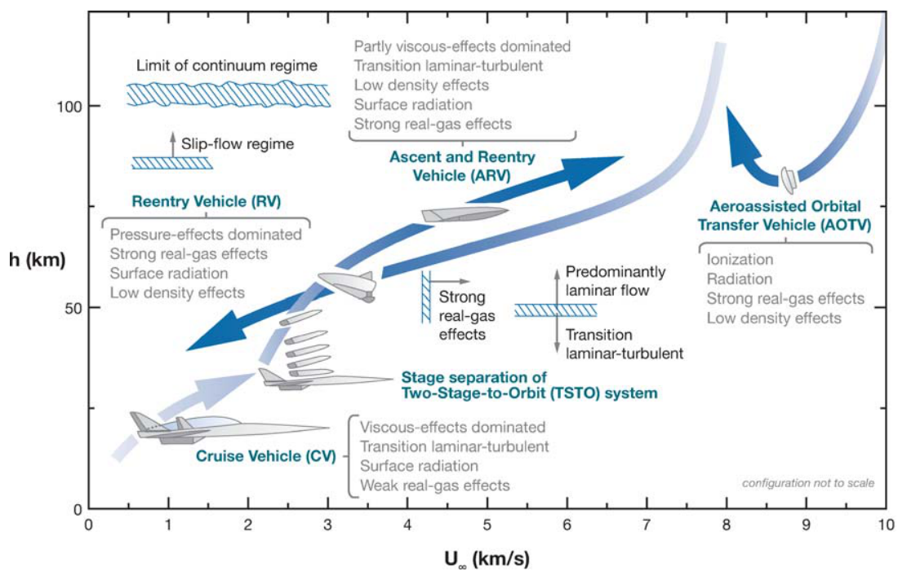
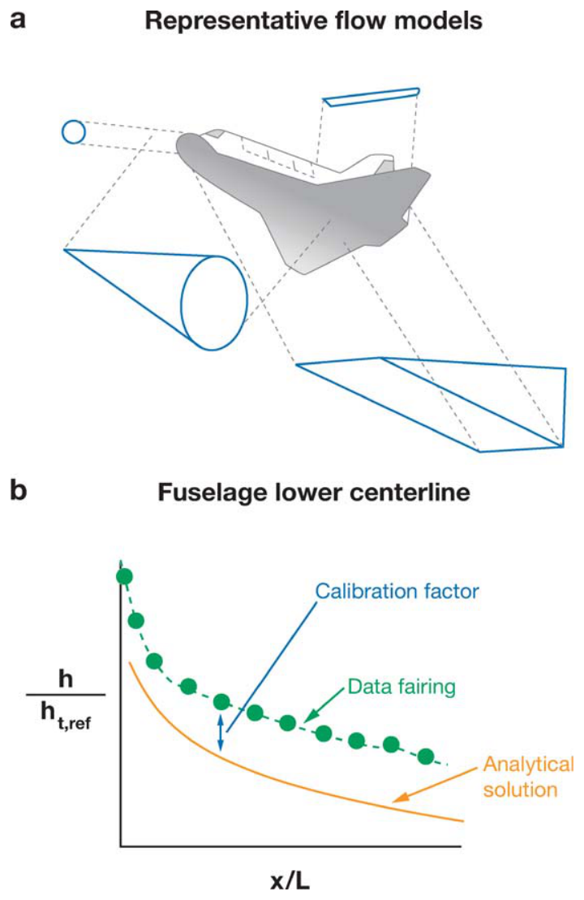
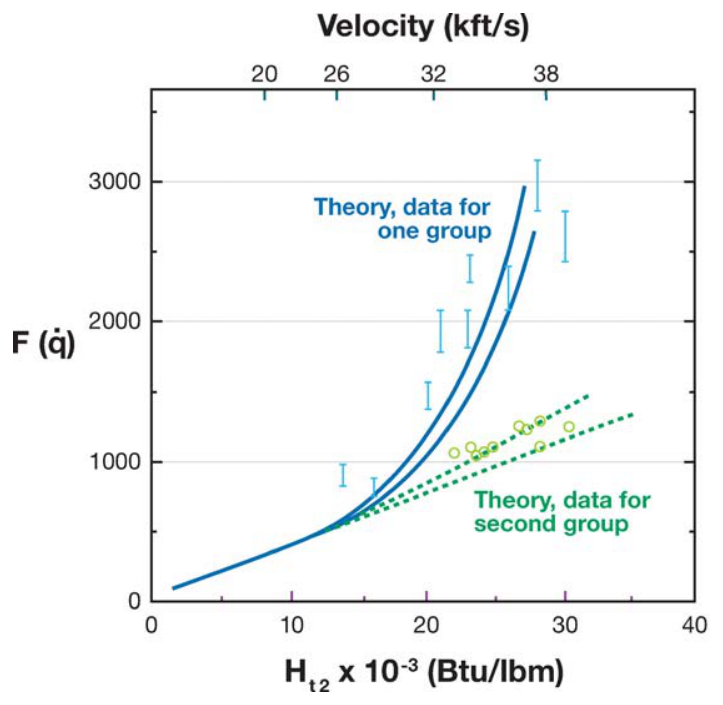
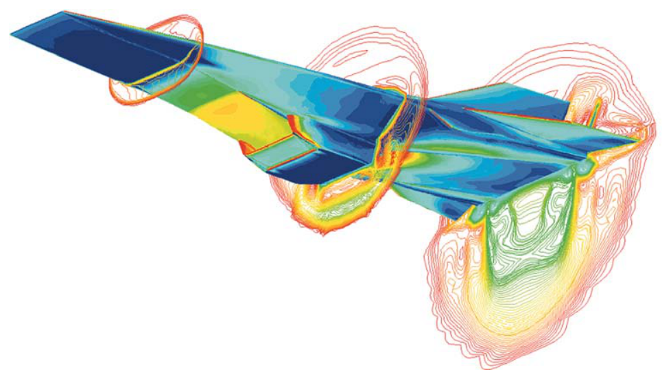

01中文摘要
本文评述高超声速飞行的关键气动热力学问题，评估现有解析方法、数值方法、地面试验和飞行试验对高超声速流动的预测能力。内容涉及高温真实气体效应、化学与热非平衡、稀薄气体、边界层转捩、激波/边界层干扰、气动加热与热防护系统设计，以及连续介质假设的适用范围。作者指出，从发射到入轨的整个飞行包络内，气动热预测仍存在显著不足，地面与飞行条件的外推、真实气体建模和转捩预测是制约飞行器设计的主要瓶颈。
原始摘要（英文/原文）
The challenges in understanding hypersonic flight are discussed and critical hypersonic aerothermodynamics issues are reviewed. The ability of current analytical methods, numerical methods, ground testing capabilities, and flight testing approaches to predict hypersonic flow are evaluated. The areas where aerothermodynamic shortcomings restrict our ability to design and analyze hypersonic vehicles are discussed, and prospects for future capabilities are reviewed. Considerable work still needs to be done before our understanding of hypersonic flow will allow for the accurate prediction of vehicle flight characteristics throughout the flight envelope from launch to orbital insertion.
02阅读说明
文章类型：综述（Annu. Rev. Fluid Mech. 2006, 38:129–157），非实验、非数值研究，无作者自有新数据。材料范围：31 页全文件；正文 p.129–151 可读，p.152–157 为参考文献，最后两页为期刊目录；bundle 全文已读到 EOF。图表可读性：图件清单只给“Figure 1”–“Figure 6”编号，正文另有图题说明；侧边下载水印造成大量断行与拼接，公式 (2)、(4) 的文本层乱码，已用 PDF 第 8–10 页（期刊 p.136–138）核对式 (3)、(4)。信息完整度：定性评述与案例丰富，定量数据零散；无系统检索式、纳入标准、误差表或不确定度分析。页码说明：bundle 页码标记为 PDF 页，比期刊页小 128；正文引用用期刊页码，图表条目按清单给 PDF 页。 文章类型：期刊、综述
03一句话核心与三句话摘要
综述高超声速气动热关键现象与四类工具，认为地面试验、CFD 与飞行试验均不足以覆盖飞行包线，“未知的未知”仍是核心风险。
- 高超声速飞行中的激波/激波干扰、激波/边界层干扰、真实气体效应与边界层转捩会在局部造成严酷热环境，而 Columbia 事故说明设计中仍存在未预见的“unknown unknowns”。 原文明确
- 文章按解析方法、数值方法、地面试验、飞行试验四条工具链评述能力与短板，引用 X-15、Space Shuttle、Hyper-X、Reentry F 等案例。 AI概括
- 没有单一地面设施能同时复现马赫数、雷诺数与高焓状态，CFD 对气动热的预测仍严重受限，需把多种工具集成到设计过程并继续依赖飞行试验。 原文明确
04核心内容清单
| 要点 | 类型 | 重要性 | 原文依据 | 属性 |
|---|---|---|---|---|
| 高超声速气动热的关键局部现象多由激波/激波、激波/边界层等黏性/无黏干扰触发，常以“unknown unknowns”形式在飞行中才暴露。 | 综述主线 | A | p.133–134；p.151 结论 | 原文明确 |
| X-15A-2 挂载模型冲压发动机在 M6.7 时因激波/激波干扰烧穿吊架并损失四个探头，而此前 M4.9 飞行无损。 | 案例证据 | A | p.133 | 原文明确 |
| Columbia 事故：TPS 破损为高温燃气提供通道，说明即使经过多年设计仍存在未预见的耦合失效。 | 案例证据 | A | p.131 | 原文明确 |
| 没有任何单一地面设施能同时模拟全部九个流动参数；风洞壁温比通常远低于飞行值，是“部分模拟”的根本限制。 | 地面试验局限 | A | p.145–146 | 原文明确 |
| 九参数之外还须考虑模型尺度、试验时间、可用数据类型与流场品质（均匀性、噪声、洁净度、稳定性）。 | 试验设计 | A | p.146 | 原文明确 |
| CFD 对气动力/力矩可较准确，但对气动热环境“severely limited”；网格 cell Reynolds 数是热流可信度的关键判据。 | 数值方法局限 | A | p.141；p.143 | 原文明确 |
| Re_cell 为 O(10) 可在驻点附近造成 100% 热流误差，Re_cell≤3 时热流才收敛。 | 定量判据 | A | p.143（引 Men'shov & Nakamura 2000） | 原文明确 |
| 边界层转捩预测在工程上长期失败：X-15 风洞数据显示层流，飞行数据显示大部分湍流。 | 关键短板 | A | p.133（引 Bushnell 1997） | 原文明确 |
| 修正 Newtonian 理论在 CFD 高度发展的今天仍被广泛用于高超声速压力工程估算。 | 解析工具 | B | p.136 | 原文明确 |
| 真实气体效应至少部分解释了航天飞机轨道器机身襟翼 7.5°→约 16° 的配平异常。 | 机理证据 | B | p.133 | 原文明确 |
| 化学非平衡模型显著影响气动系数：升力约 10%、俯仰力矩约 20%；双锥热流预测与实验可差 20%。 | 定量证据 | B | p.144–145 | 原文明确 |
| 超轨道速度（>7950 m/s）驻点热流曾有两套差异显著的相关式，经热化学分析确认低值一套正确。 | 历史争议 | B | p.139，Fig.5 | 原文明确 |
| 作者主张把解析、CFD、地面试验与飞行试验集成到设计过程，并以明确试验目标＋预试规划提升试验价值。 | 方法论主张 | A | p.134；p.146 | 原文明确 |
05引言：研究问题与领域缺口
高超声速流动的核心特征是高温气体效应强烈影响压力、摩阻与对流/辐射加热，因而气动热环境直接决定热防护系统（TPS）设计（p.129–130）。作者用“知识管理空间”框架区分渐进改进、已知未知与未知未知（Fig.1，p.130），并以三个案例说明“未知的未知”：X-15A-2 挂载模型冲压发动机在 M6.7 时因激波/激波与黏性/无黏干扰烧穿吊架（p.133）；航天飞机轨道器实际需要约 16° 机身襟翼偏转才能配平，而飞行前预测仅 7.5°，真实气体效应至少部分解释了这一“高超声速异常”（p.133）；边界层转捩长期无法可靠预测，X-15 风洞预测层流而飞行显示多为湍流（p.133，引 Bushnell 1997）。文章还给出 Kn=λ/Lchar 与连续介质/稀薄区的划分（p.131，式 (1)，Fig.2），指出峰值对流加热发生在连续流区，但再入初段存在稀薄效应。目标不是提出新理论，而是评估现有解析、数值、地面与飞行试验工具在多大的飞行包线内可信，并指出限制设计能力的短板（p.129 摘要、p.134）。
06流动条件与几何构型
| 项目 | 数值/描述 | 依据 | 备注 |
|---|---|---|---|
| 综述对象 | 高超声速飞行器气动热环境（连续流区为主，兼顾稀薄区） | p.129–132 | 非单一工况，以下逐案列出文中引用的具体条件 |
| 案例 1：X-15A-2（1967-05-05） | 最大速度 1448 m/s（4750 ft/s），无烧蚀涂层，挂载模型冲压发动机 | p.133 | |
| 案例 2：X-15A-2（1967-10，第二次带烧蚀防护飞行） | 最大速度 2021 m/s（6630 ft/s），M6.7；激波/激波干扰烧穿吊架 | p.133 | |
| 案例 3：X-15 首次高超声速飞行 | M6.7，7274 km/h（4520 mph），高度 105,218 m（354,200 ft） | p.134 | |
| 案例 4：Columbia STS-107 再入 | 入口界面 91,441 m（300,000 ft）至 82,297 m（270,000 ft）区间测得异常高温 | p.131 | |
| 案例 5：Shuttle 配平 | α=40°，预测机身襟翼偏转 7.5°，实际约 16°（接近可用偏转极限） | p.133 | |
| 案例 6：Hyper-X（X-43A）首次飞行 | M∞=7，q∞=47,879 N/m²（1000 psf），高度约 28,956 m（95,000 ft）；级间分离 <500 ms | p.148 | |
| 案例 7：Hyper-X 级间分离风洞 | AEDC von Karman Tunnel B，Mach 6，最大模型缩比 0.0833；连续运行数小时导致天平加热问题 | p.148 | |
| 案例 8：M4 双锥/局部加热地面模拟 | 高度 30,480 m（100,000 ft），总温约 950 K（1710 R）；可同时匹配 V∞、总焓、M∞、Re∞ | p.146 | |
| 案例 9：bipod 区临界加热 | 马赫数 3.5–4.0，约 30,480 m（100,000 ft），恰在级间分离前 | p.146 | |
| 案例 10：HYFLEX | 长 4.40 m（14.44 ft）；两级发射，初始高度 107 km（351 kft），速度 3.88 km/s（12.73 kft/s） | p.150 | |
| 案例 11：Project Fire | 再入初始速度 11.35 km/s（37.24 kft/s）；三层铍量热计与酚醛石棉隔热层交替布置 | p.150 | |
| 案例 12：Reentry F | 转捩数据覆盖 M 至 20，高度低至 24.38 km（80.00 kft） | p.151 | |
| 案例 13：超轨道速度 | 速度 >7950 m/s（26,082 ft/s） | p.139 | |
| 案例 14：稀薄区 | 连续流区以上高度，激波后驻点压力 10⁻⁴–10⁻³ atm | p.132 | |
| 气体化学环境 | 2000 K 起 O₂ 解离；4000 K O₂ 解离完成、N₂ 开始解离；9000 K N₂ 解离完成、O/N 电离 | p.144 | 引 Anderson 1989；非单一算例，作为热化学建模温度节点 |
| 壁温/热流条件 | 风洞模型表面在数据记录阶段通常接近室温，壁温比远低于飞行值；为匹配壁温比需降低风洞总温 | p.146 | 未给具体壁温数值 |
| 网格/湍流度/噪声 | 文中未提及统一数值；仅强调流场品质（均匀性、噪声、洁净度、稳定性）需纳入试验设计 | p.146 |
07核心现象与关键参数
| 参数 | 定义 | 数值 | 关系/说明 | 依据 |
|---|---|---|---|---|
| Kn（Knudsen 数） | 分子平均自由程与飞行器特征长度之比 | Kn=λ/Lchar；未给临界值 | 用于划分连续介质与稀薄流 | p.131，式 (1) |
| Newtonian 压力系数 | 法向动量完全损失、切向守恒假设下的局部压力系数 | Cp=2sin²θb=2cos²φ | θb 为物面相对来流偏转角，φ 为物面与来流夹角 | p.135，式 (2)，Fig.3 |
| 修正 Newtonian 压力系数 | 用驻点压力系数替代因子 2 | Cp=Cp,t2 sin²θb | Cp,t2 由实验或 Rayleigh 皮托公式确定 | p.136，式 (3) |
| 驻点热流工程关联式 | 由 Fay–Riddell 驻点解整理的近似式 | q̇t,ref=(K/RN^0.5)ρ1^0.5 V1^3.0 (Tt2)^0.4E (Tw)^0.1E /[(zt2Tt2)^0.15(zw,tTw)^0.1] | K 为量纲常数，RN 鼻锥半径，zt2/zw,t 为压缩因子 | p.137，式 (4) |
| cell Reynolds 数 | 壁面首层网格的对流/黏性尺度比 | Re_cell=ρwall awall Δy/μwall | 用于保证壁面网格足够密 | p.143，式 (5) |
| Re_cell 收敛阈值 | 热流收敛所需的 cell Reynolds 数 | ≤3；O(10) 可在驻点附近造成 100% 误差 | Men'shov & Nakamura 的网格敏感性结论 | p.143 |
| 非平衡模型对气动系数的影响 | Park 双温模型与量热完全气体对比 | 升力变化 10%，俯仰力矩变化 20% | 翼型高超声速算例 | p.144（引 Park & Yoon 1991） |
| 双锥热流预测偏差 | 非平衡 CFD 与实验对比 | 约 20% | 归因于非平衡模型、无滑移条件、网格密度与非均匀风洞来流 | p.144–145（引 Nompelis 等 2003） |
| 机身襟翼配平偏转 | Shuttle 配平所需 δBF | 预测 7.5°，实际约 16°（α=40°） | 真实气体效应至少解释部分差异 | p.133 |
| Hyper-X 首飞动压 | 自由来流动压 | 47,879 N/m²（1000 psf） | M∞=7，高度约 28,956 m | p.148 |
| 超轨道速度阈值 | 需要特殊驻点热流关联的速度范围 | >7950 m/s（26,082 ft/s） | 两套关联式争议，低值正确 | p.139 |
| 化学解离温度节点 | 空气主要组分开始/完成解离与电离的温度 | 2000 K、4000 K、9000 K | 决定平衡/非平衡/冻结模型选择 | p.144 |
| 地面试验可模拟参数个数 | 文中列出的自由来流与流场参数 | 9 个（M∞、Re∞、V∞、压力高度、总焓、激波密度比、试验气体、壁温/总温比、流场热化学） | 不能同时全部匹配 | p.145–146 |
08方法与数据
这是一篇叙述式综述，检索数据库、检索式、时间范围与纳入/排除标准文中未提及（p.129–134）。结构上分四类工具：(1) 解析方法——Newtonian 与修正 Newtonian 压力系数、Fay–Riddell 驻点热流、Lees 钝体热流分布、Eckert 参考焓平板解，以及航天飞机轨道器用简单几何体叠加＋校准因子的工程热流模型（p.135–138）；(2) 数值方法——激波捕捉与激波拟合、Lax–Wendroff/MacCormack/Godunov–Van Leer/Steger–Warming/Roe/TVD/紧致格式，网格生成与 cell Reynolds 数判据，RANS（Spalart–Allmaras、k–ω、SST）、DES、LES、DNS，DSMC/DAC 稀薄流方法，Park 双温化学非平衡模型（p.132、p.140–145）；(3) 地面试验——常规风洞、激波加热风洞、激波管、电弧加热设施、弹道自由飞靶场五类设施，以及可模拟的九个流动参数与模型尺度、试验时间、数据种类、流场品质等附加因素（p.145–147）；(4) 飞行试验——R&D 与原型/使用型飞行、三类测量（大气、机外、机载）、TPS 热电偶＋参数辨识（p.149–151）。文章没有作者自建的验证算例，所谓“验证”均是对被引案例的评述；定量不确定度、重复性与误差分析文中未提及。
| 项目 | 内容 | 依据 | 备注 |
|---|---|---|---|
| 综述类型 | 叙述式综述，按工具类别组织，无系统检索式 | p.129–134 | 检索范围、纳入/排除标准、文献计量信息文中未提及 |
| 解析方法：无黏压力 | Newtonian 与修正 Newtonian 理论 | p.135–136，式 (2)–(3) | |
| 解析方法：驻点热流 | Fay–Riddell 驻点解及其工程关联式；Sutton–Graves、Scott、Detra 等关联式被提及 | p.136–137，式 (4) | |
| 解析方法：钝体热流分布 | Lees 相似变换解与无量纲热流参数 | p.136–137 | |
| 解析方法：平板/机身热流 | Eckert 参考焓平板解 | p.137 | |
| 工程热流模型 | 把轨道器分解为锥、柱、平板、球、楔的解析解，乘位置相关校准因子匹配风洞数据；层流与湍流校准因子分别保持常数外推到飞行 | p.137–138，Fig.4 | |
| 数值方法：激波处理 | 以激波捕捉为主，激波拟合为备选；Lax–Wendroff、MacCormack、Godunov/Van Leer、Steger–Warming、Roe、TVD、紧致差分、AUSMPW+ 等 | p.141–142 | |
| 数值方法：网格 | 商用网格生成；自适应网格加密（Pirzadeh 2001）；cell Reynolds 数与壁面温度跳跃需监控 | p.142–143 | |
| 数值方法：湍流 | RANS（Spalart–Allmaras、k–ω、SST）、DES 混合 RANS/LES、LES、DNS；需压缩性修正 | p.143–144 | |
| 数值方法：化学非平衡 | Park 双温模型；平衡、非平衡、冻结化学多级近似 | p.144 | |
| 数值方法：稀薄流 | DSMC 与 NASA 的 DAC 实现 | p.132 | |
| 地面试验设施 | 常规风洞、激波加热风洞、激波管、电弧加热设施、弹道自由飞靶场 | p.145 | |
| 地面试验设计要素 | 九个流动参数＋模型尺度、试验时间、可用数据类型、流场品质 | p.145–146 | |
| 飞行试验 | R&D 与原型/使用型飞行；TPS 热电偶测温＋参数辨识反演热流；机载/机外/大气三类测量 | p.149–150 | |
| 验证与不确定度 | 无作者自建验证算例；未给定量不确定度、重复性或误差统计 | p.129–151 | 文中未提及 |
09核心推导与公式
综述性质：原文没有从控制方程出发的逐步推导，只以叙述方式给出 Newtonian→修正 Newtonian 的替换逻辑、Fay–Riddell 驻点热流工程式与 cell Reynolds 数判据。以下按原文顺序整理这些关系式及其原文依据，不补充原文没有的数学步骤。
关键假设
- Newtonian 模型：自由来流粒子的速度与方向在撞击物面前不变，法向动量被完全消除、切向动量守恒（p.135）
- 修正 Newtonian：驻点压力系数取实验或 Rayleigh 皮托公式值 Cp,t2，代替理想值 2（p.136）
- Fay–Riddell 关联式：层流驻点边界层、球头、零攻角，物性按总温与壁温修正（p.136–137）
- cell Reynolds 数判据：连续介质、壁面附近网格尺度 Δy 远小于流动尺度（p.143）
- 上述关系式均为工程近似，原文未给误差界或适用马赫数/雷诺数范围
推导过程
原文假定来流粒子撞到物面前速度与方向不变，法向动量被消除、切向守恒，由此直接给出局部压力系数；这是原文对这一式子的全部说明，未展开动量积分。
因实测与计算的驻点 Cp 总小于 2，Lees 建议把因子 2 换成驻点值 Cp,t2（可由实验或 Rayleigh 皮托公式得到）。原文只给替换结果，未推导。
由 Fay–Riddell 驻点解可整理出式 (4) 的近似式；K 为量纲常数，RN 为鼻锥半径，Tt2 为激波后总温，Tw 为壁温，zt2、zw,t 为压缩因子，上标 E 为原文的单位说明。
用壁面密度、声速、首层网格厚度与黏性构造 cell Reynolds 数，以保证壁面网格足以解析黏性与传热；Men'shov 与 Nakamura 的经验是 Re_cell≤3 时热流收敛。
适用边界：原文未推导式 (2)–(5)，也未给出其适用马赫数、雷诺数与焓值范围；式 (4) 含量纲常数 K 与经验指数，不能外推到未标定气体；Newtonian 类模型在稀薄过渡区失效（p.132 指出连续介质假设在高空失效）；cell Reynolds 判据只保证数值分辨率，不保证湍流/化学模型正确。
10结果：主要发现与关键证据
解析工具：Newtonian 理论给出 Cp=2sin²θb=2cos²φ，但实测/计算的驻点 Cp 总小于 2，故用 Cp,t2 替换因子 2 得修正 Newtonian（p.135–136）；Fay–Riddell 驻点热流仍是钝头体设计的经典基准，并派生出工程关联式（p.136–137，式 (4)）；航天飞机轨道器把外形分解为锥、柱、平板、球、楔，用解析解乘位置相关校准因子去匹配风洞数据（p.137–138，Fig.4）。数值工具：cell Reynolds 数须足够小，Men'shov 与 Nakamura 报告 Re_cell 为 O(10) 时驻点附近热流误差可达 100%，Re_cell≤3 才收敛（p.143）；Longo 等认为网格密度、平衡/非平衡、转捩/湍流建模、几何（尤其激波干扰区）四五个因素决定再入飞行器预测精度（p.141）；Park 与 Yoon 显示非平衡模型使翼型升力与俯仰力矩分别变化 10% 与 20%（p.144）；Nompelis 等对双锥体的热流预测与实验差 20%（p.144–145）。地面试验：九参数不能同时模拟，风洞模型壁温比通常远低于飞行值，只能降低总温近似（p.145–146）；M4、30,480 m 时 T0≈950 K，可在 AEDC Supersonic Aerothermal Tunnel C 与 CUBRC LENS II 同时匹配 V∞、总焓、M∞、Re∞ 四个参数（p.146）；Hyper-X 首次飞行 M∞=7、q∞=47,879 N/m²、高度约 28,956 m，级间分离在不到 500 ms 内完成，Tunnel B 的 M6 试验最大模型缩比仅 0.0833（p.148）。飞行试验：Columbia 再入在 91,441 m 至 82,297 m 已测到异常高温（p.131）；HYFLEX 长 4.40 m，释放高度 107 km、速度 3.88 km/s（p.150）；Project Fire 初始速度 11.35 km/s（p.150）；Reentry F 提供直至 M20、高度低至 24.38 km 的转捩数据（p.151）；Edney 识别出六类激波/激波干扰图案（p.150）。
| 发现 | 证据 | 证据类型 | 强度 | 位置 | 属性 |
|---|---|---|---|---|---|
| 地面设施无法同时模拟九个流动参数，且壁温比通常远低于飞行值；所谓地面模拟本质上是“部分模拟”。 | p.145–146 列出九参数并说明壁温比偏差；引 Potter 语“Aerodynamic modeling is the art of partial simulation” | 综述论证 | 强 | p.145–146 | 原文明确 |
| cell Reynolds 数是高超声速热流预测可信度的关键：Re_cell 为 O(10) 可使驻点附近热流误差达 100%，Re_cell≤3 才收敛。 | 式 (5) 与 Men'shov & Nakamura 的网格敏感性结论 | 定量判据 | 强 | p.143 | 原文明确 |
| CFD 可较好预测压力、力与力矩，但对气动热环境预测“severely limited”，主要受转捩、湍流、化学非平衡与激波干扰区几何建模限制。 | Longo 等与 Weiland 等的评述被作者转述 | 专家评述 | 强 | p.141 | 原文明确 |
| 真实气体效应至少部分解释了航天飞机轨道器襟翼配平从预测 7.5° 到实际约 16° 的偏差。 | 平衡空气与完全气体计算对比（Maus 等 1984） | 案例对比 | 中 | p.133 | 原文明确 |
| 化学非平衡建模对气动系数影响显著：升力约 10%、俯仰力矩约 20%；双锥热流预测可与实验相差 20%。 | Park & Yoon (1991)；Nompelis 等 (2003) | 定量证据 | 中 | p.144–145 | 原文明确 |
| 超轨道速度驻点热流曾有两套差异显著的相关式，经热化学分析确认低热流一套正确，说明复杂高超声速现象必须以严谨分析校验模型。 | Fig.5 两套关联式对比与作者叙述 | 历史案例 | 中 | p.139 | 原文明确 |
| 转捩预测在工程上长期不可靠：X-15 风洞数据指示大部分层流，飞行试验却指示大部分湍流。 | Bushnell (1997) 引语与 X-15 案例 | 案例证据 | 强 | p.133 | 原文明确 |
| 飞行试验不可替代但昂贵、危险且测点有限；热流不能直接测量，只能借热模型从温度反演。 | Neumann (1989)“Heat transfer ... cannot be directly measured”；Williamson (1992) 测量分类 | 方法论述 | 中 | p.149 | 原文明确 |
11机制解释与论证链
【原文明确】局部严酷加热的因果链是：物面偏转或激波入射产生强激波→逆压梯度使边界层增厚甚至分离→分离剪切层/再附激波与物面或与其他激波相交，形成激波/激波干扰（Edney 六类图案），在干扰区产生远高于无干扰区的压力与热流（p.133，p.150）。【原文明确】高温使 O₂/N₂ 解离与电离，化学非平衡改变激波层温度分布与壁面催化加热，因此平衡/非平衡/冻结模型的选择会改变升力、力矩与热流（p.144）。【原文明确】边界层转捩决定湍流热流水平，但转捩位置难以预测，风洞与飞行常给出相反的层流/湍流判断（p.133）。【AI概括】工具链层面，地面试验只能“部分模拟”，CFD 只能“部分建模”，飞行试验只能“少量测点”，三者误差在局部干扰区叠加，导致设计者遇到未预见的“未知未知”。
12讨论：结论、贡献与局限
作者的核心论证是：高超声速气动热的难点不是单一物理模型，而是多尺度、多物理耦合下“局部严酷加热”的不可预见性，且四类工具各有无法消除的仿真偏差。地面试验受“部分模拟”本质限制（p.146 引 Potter 语），模型尺度、壁温比、流场品质与试验时间都偏离飞行；CFD 受连续介质/完全气体/层流或经验湍流模型等假设限制，网格与算法耗散还会污染热流（p.140–143）；飞行试验最真实但昂贵、危险、测点有限，且热流不能直接测量而需热模型反演（p.149）。因此作者主张把解析、CFD、地面与飞行试验集成为设计流程（p.134），并以“预先明确的试验目标＋完整预试规划”来提高每次试验的信息量（p.146）。局限：全文为定性综述，未给出各工具误差的统计分布或适用包线边界；对转捩只说明“另见补充材料”，未展开；案例几乎全部来自美国项目，缺少同期俄罗斯/欧洲数据的系统对比；文章发表于 2006 年，未覆盖之后的 HIFiRE 等飞行试验。
作者结论
作者结论：尽管研究已数十年，高超声速流动的分析与设计仍充满挑战；Columbia 事故证明即使最好的实验与数值分析也无法预测所有“未知的未知”（p.151）。高超声速风洞无法充分模拟飞行器的马赫数、雷诺数与高焓状态，只能近似与外推；CFD 中化学反应建模与激波/激波干扰预测的不确定性使预测尚不可完全信任；飞行试验仍然昂贵、危险。理解高超声速流动将长期是挑战（p.151）。
主要贡献
- 以“unknown unknowns/known unknowns”框架组织高超声速气动热风险，把技术短板与项目风险联系起来。
- 系统梳理解析（Newtonian、Fay–Riddell、Lees、Eckert、校准因子）、数值（激波捕捉、网格、RANS/LES/DES、化学非平衡）、地面与飞行试验四类工具的能力边界。
- 汇整有代表性的定量案例：X-15 激波干扰损伤、Shuttle 襟翼配平异常、Hyper-X 首飞与级间分离风洞、Reentry F 转捩数据等。
- 给出可操作的工程判据与建议：cell Reynolds 数、九参数部分模拟、明确试验目标与预试规划、多工具集成。
局限与未解决问题
作者承认的局限：高超声速风洞不能同时模拟 M、Re 与高焓；CFD 化学与激波干扰建模不可靠；飞行试验昂贵危险（p.151）。材料显示的其他局限：叙述式综述，无检索式、纳入标准与定量误差统计；未给出各工具适用包线的定量边界；转捩只留给补充材料，正文几乎未展开；案例集中于美国项目；发表于 2006 年，未涵盖此后的 HIFiRE、X-51A 等飞行试验与新一代高焓设施；对 SBLI 的控制方法、分离泡尺度律等未作系统讨论。
13对高速流动与工程的意义
对高速流动与工程设计的价值：文章把“局部严酷加热来自干扰”这一认识落到工具选择上——初步设计可用 Newtonian/修正 Newtonian 与 Fay–Riddell 估算压力与驻点热流（p.135–137）；CFD 必须监控 cell Reynolds 数并谨慎对待转捩、湍流与化学模型（p.143–144）；地面试验应把有限的模拟能力集中在任务关键参数上，并用明确目标与预试规划提高信息量（p.146）；飞行试验用于验证地面与外推、发现未知现象（p.149–151）。对进气道/隔离器、襟翼与级间分离等激波/边界层干扰主导部位，文章提示应重点关注 Edney 型激波干扰、分离剪切层再附与壁温比偏差（AI 推断）。它不能提供具体分离泡长度、热流峰值或控制方案。
14核心图件




15可引用原文素材
| 原文短句 | 可支持的观点 | 位置 | 使用建议 |
|---|---|---|---|
| “Aerodynamic modeling is the art of partial simulation.” | 地面试验只能部分模拟的核心判断 | p.146（引 J. Leith Potter） | 讨论风洞外推与试验设计时引用 |
| “the codes are NOT an end in themselves” | CFD 只是工程工具，需要批判性评估 | p.139（引 Neumann 1988） | CFD 可信度讨论 |
| “historically, man has been singularly unsuccessful in ‘predicting’ transition” | 转捩预测的长期失败 | p.133（引 Bushnell 1997） | 转捩建模局限的强引语 |
| “There is no single ground-based facility capable of duplicating the hypersonic flight environment” | 地面设施无法复现飞行环境 | p.145 | 多设施组合试验的必要性 |
| “Heat transfer is a quantity which cannot be directly measured” | 热流只能借热模型从温度反演，飞行测量存在解释环节 | p.149（引 Neumann 1989） | 讨论飞行试验测量不确定度时引用 |
| “there are still “unknown unknowns”” | 领域仍存在未预见现象 | p.151 | 结论引用 |
| “CFD is severely limited in accurately predicting the aerothermodynamic environment” | CFD 气动热预测能力有限 | p.141 | 数值方法局限 |
| “the heat flux converges when the value of Recell is less than or equal to 3” | cell Reynolds 数收敛阈值 | p.143 | 网格设计准则 |
16最终核验
| 核验项 | 结论 |
|---|---|
| 仅基于全文 | 是。仅使用 bundle 全文与图件清单图注，并用 PDF 第 8–10 页（期刊 p.136–138）核对式 (3)、(4) 的符号与指数；未引入外部文献或教科书推导。 |
| A 级要点有依据 | 是。A 级要点（unknown unknowns、X-15 与 Columbia 案例、九参数不能同时模拟、壁温比偏差、cell Re≤3、CFD 气动热严重受限、转捩失败、多工具集成）均给页码；图表条目按清单原样引用。 |
| 属性标注 | 是。三个摘要句、核心要点、发现、机制段均标注【原文明确】/【AI概括】/【AI推断】；机制段的工具链误差叠加属 AI 概括。 |
| 覆盖范围 | 全文 31 页读到 EOF：正文 p.129–151、参考文献 p.152–157、期刊目录 2 页；图表清单 6 项，选用 4 项。 |
| 无编造 | 是。未编造数据、页码、图号；式 (2)–(5) 按原文照录，未补写推导；缺失项（检索标准、不确定度、网格量）写“文中未提及”。 |
需回原文确认
- 九个流动参数中哪些对某类任务（如进气道起动、襟翼干扰、级间分离）最关键？原文只给原理，未给优先级矩阵。
- cell Reynolds 数判据 Re_cell≤3 是否适用于高焓、强激波干扰与壁面催化条件？原文只引一个二维算例结论。
- 壁温比偏差对分离泡长度与再附热流峰值的定量影响是多少？原文未给。
- 超轨道速度两套热流关联式差异的物理机制与适用范围边界是什么？原文只说低值正确。
- 2006 年后的 HIFiRE、X-51A 等飞行试验是否填补了文中指出的“unknown unknowns”？超出本文材料范围，无法回答。
- 文中多次提到边界层转捩却把讨论放到补充材料，正文缺少转捩判据与数据，需回原文补充材料或所引 Schneider 综述核对。
17关联文献
依据标签、板块、构型与作者脉络自动关联，可据此追踪同一问题的前序与后续工作。
18引用格式
选择期刊风格后复制；出处保留原刊名。BibTeX 可直接用于 LaTeX。
引用格式
Bertin, J. J. & Cummings, R. M. 2006 Critical hypersonic aerothermodynamic phenomena. Annual Review of Fluid Mechanics 38 (1), 129–157. https://doi.org/10.1146/annurev.fluid.38.050304.092041
PDF上传 PDF 并更新本页
本页缺少全文、摘要或图件时，可在浏览器本地补入 PDF。解析完全在本机完成，不上传网络；完成后会更新本页的 PDF 打开链接、原摘要、IMRaD 机器抽取、关键句与含图页面。复杂的公式语义与中文深度解读仍以原文和既有精读记录为准。
Zotero 笔记摘录
临界超音速空气热动力现象 摘要：讨论了理解高超音速飞行所面临的挑战，并回顾了关键的高超音速空气热力学问题。 评估了当前分析方法、数值方法、地面测试能力和飞行测试方法预测高超音速流动的能力。 讨论了空气热力学的缺陷在哪些方面限制了我们设计和分析高超声速飞行器的能力，并展望了未来的能力。 在我们对高超音速流动的理解能够准确预测飞行器从发射到进入轨道的整个飞行包络线的飞行特性之前，仍有大量工作要做。 1.INTRODUCTION 在高超音速飞行器的流场中，高温气体效应会对作用在表面的力（压力和表面摩擦力）和能量通量（对流和辐射加热）产生强烈影响。 高超音速气流的特点通常是存在强烈的冲击和平衡或非平衡气体化学反应。 准确预测这些影响对于设计任何以高超音速飞行的飞行器都至关重要。 作用于飞行器表面的压力和表皮摩擦力在整个构型上进行整合，以确定空气动力和力矩（如升力、阻力、俯仰力矩和控制面有效性）。 作为热保护系统（TPS）设计过程的一部分，对飞行器表面的峰值传热速率和加热负荷（即随时间综合的加热速率）进行映射。 评估结构负载和通风环境需要压力分布。 飞行器进入地球大气层时的热传导率峰值出现在空气表现为连续体的高度。 然而，在哥伦比亚号执行 STS-107 飞行任务时，从 91,441 米的进入到 82,297 米的再入大气层期间，温度传感器已经测得了异常高的温度。 这一高度范围内的空气密度相对较低。 平均自由程相对较大。 在超过连续流体区域的海拔高度上，飞行器波后滞止压力常常在0.0001~0.001atm范围内。 2.TOOLS FOR DEFINING THE CONTINUUM, HYPERSONIC AEROTHERMODYNAMIC ENVIRONMENT 从设计过程一开始，设计人员必须确定空气热动力环境的某些 "已知参数 "的值，例如升力、阻力、修正要求、TPS、流场中气体的热化学状态等。 当然，我们无法确定某些已知参数的值，例如，确定边界层过渡发生的位置。 尽管如此，我们应该将这些参数作为一个因素纳入设计。 虽然我们仍无法严格模拟支配这些参数的基本流体力学，但我们可…